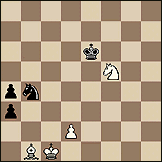

Breve comentario (en inglés) sobre los carismáticos (más precisamente: el movimiento carismático) dentro de la Iglesia vs los tradicionales críticos.
No estoy seguro ... otro día acaso hablaremos algo del tema.
- Cuando decimos que un poeta alaba toda la creación generalmente sólo queremos decir que alaba todo el cosmos. Pero el místico alaba realmente la creación, en el sentido de acto de creación.
Alaba el paso o transición de la nada al ser ... pasa por el momento en que no existe nada sino Dios, contempla de alguna manera los principios sin principio en que realmente no había nada más.
No sólo aprecia todas las cosas, sino la nada de que se hicieron todas las cosas.
En cierto modo soporta y contesta aún la ironía de terremoto del Libro de Job; en cierto modo está presente cuando se echan los cimientos del mundo, con las estrellas matutinas cantando a coro y los hijos de Dios "gritando de alegría".
San Francisco de Asís
| Más sobre la Jornada Mundial de la Juventud, en Toronto, con el Papa, acá y acá |
{kind=link}
{kind=link}
- Heidegger en sus lecciones sobre Nietzsche está
confrontando veladamente con la revolución nazi,
a la que ve como un suceso que se halla enteramente
bajo el proyecto moderno de la dominación total,
al igual que el americanismo y el comunismo.
El hombre, ya sea como individuo librado a su egoísmo,
o como comunidad, como personalidad en la comunidad,
o como miembro del grupo corporativo, el hombre como
dirigente o como masa, como revolucionario o
como reformista: se trata de máscaras de
las cuales se vale el proyecto moderno del dominio
incondicionado del poder.
Pero ¿quién o qué es
lo que domina en este proyecto?
Una idea atraviesa a la subjetividad moderna en todas
sus variantes, desde el liberalismo hasta el socialismo,
pasando por el fascismo: la voluntad humana rige
la realidad y ha de regirla cada vez más;
el poder es el ejercicio de esta voluntad y
sólo hace falta ir por él.
La historia es el escenario
de las disputas humanas por ese apoderamiento.
La ciencia y la tecnología son las armas de
esas disputas y el resultado de las disputas es
el dominio siempre en aumento del hombre sobre los
hombres y sobre la tierra.
El hombre va a ser él único animal capaz
de dirigir su propia evolución.
La verdad ya no cuenta.
Esta es la magia del extremo de la que hablaba
Nietzsche hace 120 años.
Hoy el rostro visible de esa magia es la globalización,
la agobiante omnipresencia
de la publicidad, el desciframiento de la cadena del genoma
humano, la amenaza en ciernes de las armas químicas, nucleares
y bacteriológicas, el envenenamiento del aire mediante
procedimientos graduales o drásticos, el terror contra el terror.
Pero ¿cuál es el rostro invisible de esa magia? ¿No será el hombre tan sólo un aprendiz de brujo?
Y hay mucho más (una interesantísima -aún para mí- discusión contra la revista "El amante" sobre cine), más de Kierkegaard, más de Fenoglio... y hasta lograron engancharme con algunas cosas de uno que no es santo de mi devoción:
- ... no son ni locos ni cuerdos. Se mueven como
fantasmas en un mundo de tinieblas y problemas morales
y crueles.
Si fueran menos cobardes, se suicidarían; si tuvieran un poco más de carácter, serían santos.
En verdad, buscan la luz. Pero la buscan completamente sumergidos en el barro. Y ensucian lo que tocan.
hablando de sus propios personajes
Y también en inglés: sobre las nuevas búsquedas que se están haciendo de nuevos rollos del Mar Muerto.
(en inglés)
Un artículo en Cristianity Today sobre George Barna, el Gallup de los cristianos (evangélicos) de EEUU.
Encuestas, estadísisticas y sus aplicaciones al marketing del cristianismo; el tipo tiene incluso un libro con el chocante título "Marketing the Church"....
PD: Odio las páginas que te cambian el color de la scroll bar
Solución del final artístico de Kasparian:
 1. C4D+
Parte de las reglas -y del encanto- de los finales artísticos está en que
la línea ganadora sea única... Veamos otras posibilidades
1. A4R (para dejar lugar al rey para detener al peón) R4R!, 2 P3D (forzado)
P7T, 3. R2C P6T+! , 4. R1T (el blanco pudo parar el peón, pero todas
sus piezas quedaron mal ubicadas) R5A y tablas posicionales: a cualquier
jugada de caballo (única pieza que puede moverse), R6R fuerza a volver
1. C3R (esta jugada es mucho más pasiva que C4D+; las negras entablan
fácil con:) P7T, 2. AxP CxA, 3. R2C C4C 4. R3T y aunque las blancas ganan
el peón, el final de caballo y peón contra caballo es claramente tablas
1 ... R4R
Tratar de acercar al rey es lo mejor, y es la variante principal. Pero hay que entender por qué pierde la otra estrategia, la de alejarse con (por ejempo) 1... R3A (por supuesto, R4D pierde enseguida por 2. C2A) 2. C2A P7T, 3. AxP CxA, 4 R2C : el caballo capturó el alfil pero quedó copado, las blancas lo capturan y ganan fácil.
Lo interesante del final surge de que, vista esta variante, la cosa
ahora parece demasiado fácil para las blancas, pues parece que
esta línea gana siempre, mueva donde mueva el rey en la primer
jugada. Pero no.... ! Observar que si el rey negro se encontrara
en 4R, el negro haría tablas con 4... R5R !, y a 5. RxC sigue
R6D ganando el peón y haciendo tablas con lo justo...
Veamos entonces cómo sigue la cosa.
2. C2A
Claramente, no hay otra. Si 2. C3A+ R5A tablas
2. ... P7T
Qué hacemos ahora ? Ya vimos que con 3. AxP CxA, 4 R2C R5R! el negro hace tablas. Y no parece haber nada mejor.... esta es la posición crítica. Y acá viene la sorpresa.
3. CxC !!
Cómo ?? Van a dejar al peón coronar ? No hay ningún jaque doble a la vista, ni nada... cuál es ?
3 ... P8T = D
Parece que son las negras las que ganan. Pero la cosa es muy simple, aunque no fácil de ver:
4. C2A!!
Increíblemente, la dama quedó copada. Deben entregarla
por una pieza y pierden ... con lo justo, como debe ser.
Para terminar de saborear el final, fijarse en la perfección del copamiento
de la dama: cada pieza de la posición final (de las blancas y de las negras)
"coopera" para quitarle casillas de escape a la dama. Esto es un rasgo
de calidad de un final artístico, el minimalismo, la ausencia de piezas
superfluas en la posición final.
Un aplauso para Kasparian.
Extrañamente, incomprensiblemente, en la puerta de una de esas anodinas oficinas de banco, hoy habían pegado un hoja (impresa en computadora) con la leyenda "Santiago Apóstol", con un dibujo de significado incierto (quizás religioso, quizás no).
Y sí; veo ahora que efectivamente hoy es la fiesta de Santiago, uno de los doce apóstoles, que según una viejísima tradición anduvo misionando por España.
Igual, la hoja esa sigue intrigándome...
Dice el Clarín de hoy, comentando el último viaje del Papa... :
- Que "sorprendió a todos cuando bajó del avión caminando, sin la ayuda de la plataforma mecánica "...
pero "no pudo cumplir con el rito de besar la tierra del país al que llega". - Que los actos en Canadá "Serán, sin duda, multitudinarios"...
pero mucho menos que otras veces. - Que en México va a beatificar a dos indígenas...
pero estos indígenas no soy del todo simpáticos : "según los críticos .... fueron delatores y traidores a la cultura zapoteca." - Que con la canonización de Juan Diego, México tendrá su
primer santo indígena ...
pero ... "Han habido críticas muy fuertes por este acto".... -
.. pues, sepan los lectores que "Según la tradición, la Virgen de Guadalupe se le apareció
a Juan Diego en 1931
... (!!!)
Pero no hay prueba de eso"
la de no ser santos
Leon Bloy
No soy muy adicto a los viajes ni a las multitudes. Pero creo que me hubiera gustado
estar en Canadá en estos días,
para estar con el viejo polaco, seguramente la persona más querida en todo el mundo...
En tiempos tan oscuros (y tan ... neblinosos) hay cosas -hay personas-
de las que uno puede estar -dichosamente- cierto.
Es claro que cuando X odia a Y, siempre se puede decir que el odio se debe
justamente a que Y es bueno (y X malo); y el victimismo siempre tiene
armas a su disposición para justificarse, ante los propios ojos y antes los demás.
También es verdad que rara vez se encuentran amores (u odios) puros,
y es difícil discernir cuánta verdad hay de cada lado.
Pero: cuando alguno, viendo (y conociendo mínimamente al hombre)
afirma que esos viajes son "lamentables espectáculos" frutos
de la "vanidad y engreimiento" del
viejo chocho; cuando me hablan del "marketing",
de que "está luchando para batir
records a ver si se le le hace santo, que eso es lo único que le importa;
eso es lo que le ha vendido la curia"...
Un odio de esa calidad ... no es una "prueba" de nada, pero para
mí es algo así como una "confirmación".
Pero... siempre hay una parte de verdad en ambos lados: en este caso, la de que "al polaco lo único que le importa es ser santo". Es así. Lo que no entiende el que lo dice, es que ser santo tiene poco que ver con ser canonizado. Y que no ha sido "la curia", precisamente, quien lo ha convencido de eso.
- El Reino de los Cielos es semejante a un tesoro escondido en un campo que,
al encontrarlo un hombre, vuelve a esconderlo y, por la alegría que le da, va,
vende todo lo que tiene y compra ese campo ...
Mt 13:44
Y basta de computadora por hoy. A rezar por el Papa. Y a dar gracias por este Papa.
-
...
Salvo solamente a aquella
que no ama en un principio a la primavera
sino el orden de tal flor
donde la primavera se ha encerrado.
Que no ama el amor,
sino tal rostro particular que ha tomado el amor.
Por esto expurgo o reúno
a esa esposa dispersa en la tarde.
Y en torno a ella dispongo,
como tantas otras fronteras,
la estufa y la olla de cobre,
para que poco a poco,
a través de este conjunto,
descubra un rostro familiar,
una sonrisa de aquí.
Y será para ella la lenta aparición de Dios.
Y el niño llorará para mamar,
la lana por cardar tentará los dedos,
y la brasa reclamará el soplo.
Y entonces estará capturada y pronta a servir.
Porque soy aquel que construye
la urna alrededor del perfume.
La rutina que colma el fruto.
El que obliga a la mujer a tomar figura y a existir,
para que entregue a Dios,
no ese débil suspiro dispersado en el viento,
sino tal fervor, tal ternura, tal sufrimiento particular...
La verdad se cava como un pozo.
La mirada que se dispersa pierde la visión de Dios.
Sabe más acerca de Dios el sabio que ha recogido
y solo conoce el peso de la lana esquilada,
que la esposa adúltera abierta a las promesas de la noche.
Ciudadela, yo te construiré en el corazón de los hombres.
....
Dice Castellani (en "Los papeles de Benjamín Benavídez", Cuaderno 4, capítulo 1, página 304 de la segunda edición) que dice Schopenhauer que cuando en una conferencia o proclama uno dice algo acerca de las mujeres (en general), todas las mujeres presentes se consideran personalmente aludidas en particular.
Ahora se me ocurre que esa sentencia dice algo sobre las mujeres en general; ergo, si uno la cree verosímil, prudente será no decirla si hay mujeres escuchando ... o si existe esa remota posibilidad.
Bueno. Pero también hay un tiempo para la prudencia y un tiempo para la imprudencia, dice el Eclesiastés. O algo parecido (uno no es muy bueno para las citas).
-
[X es un ] proyecto hispano-literario dirigido a formar una comunidad
que tiene como objetivo fundamental
[o intercambie ud. las palabras en verde y azul si lo prefiere; da lo mismo]
desarrollar, fomentar y divulgar la cultura
neoliteraria latinoamericana y de habla hispana a través de la Internet.
Mediante un sofisticado y estructurado sistema de navegación, X se postula como el mejor portal enfocado completamente a interrelacionar personas de todas las edades, culturas y países que compartan tendencias similares hacia la escritura y sus fronteras ilimitadas.
La población de escritores en X varia desde (sic) curtidos escritores hasta los nuevos talentos inéditos, permitiendo así que X sea una encrucijada global de todos géneros y estilos de escritura. (resic!)
Buen artículo sobre las alternativas de software para hacer weblogs.
(link de la mágica web)
Es gracioso eso -que suele verse tanto por acá- de las citas de Einstein, casi siempre falsas ; y es más gracioso verlo también (y sobre todo) en tipos de orientación científica, por lo general "incrédulos", refutadores de leyendas y reacios a "argumentos de autoridad" ... ese prurito por buscar apoyo, autoridad para una idea, frase, hecho ... poniéndolo en boca de Einstein, o poniéndolo de protagonista. Como si fuera una especie de santo intelectual, una especie de "doctor de la Iglesia" ...
Hasta un lector de Coelho es capaz de "citar" algo como:
-
... - como dijo Einstein: "la diferencia entre la estupidez y la genialidad,
es que la genialidad tiene límites".
- la frase es inteligente
- Einstein es inteligente
- el que cita a Einstein es inteligente
Pobre Einstein... Claro que no es el único de estos íconos, pero es uno de los más "universales". Allá por el norte también se usa Mark Twain. Pero al menos, de éste uno podría decir: "se lo merece" , el tipo era un poco de buscarse ese papel de decidor ingenioso... Pero .... Einstein !
Referido a esto, encontré un
thread
divertido en los news, en Google:
Empezó
uno aportando una selección de un libro que me gustaría leer:
"Las leyes de las citas erróneas", como por ejemplo:
- Si una cita puede ser alterada, lo será
- Pequeñas alteraciones pueden tener un gran impacto
- Las personas famosas fallecidas son excelentes comentaristas de los hechos actuales
- A citas famosas, bocas famosas
- En casos difíciles, una cita huérfana será llamada "proverbio chino"
Un segundo aportó esto:
-
No olvidar la ley que se aplica especialmente a Usenet:
"Toda cita que suene vagamente apropiada será, tarde o temprano, adjudicada
a H.L. Mencken, Mark Twain, Albert Einstein.
Después otro dijo :
- Yo siempre digo que no importa mucho de quién sea la cita, mientras sea una buena cita
A lo que otro remató :
-
"No importa de quién sea la cita, mientras sea una buena cita"
Hoy 22 de julio es la fiesta de Santa María Magdalena.
Y en la misa se lee el texto del evangelio de San Juan en el que Jesús resucitado se aparece a María Magdalena, y ella debe oír su propio nombre de labios de él, para reconocerlo...

- Dicho esto, se dio vuelta y vio a Jesús allí, de pie, pero no sabía que era Jesús. Jesús le dijo: «Mujer, ¿por qué lloras? ¿A quién buscas?» Ella creyó que era el cuidador del huerto y le contestó: «Señor, si tú lo has llevado, dime dónde lo has puesto y yo me lo llevaré.»
Jesús le dijo: «María». Ella se dio la vuelta y le dijo: «Rabboní», que quiere decir «Maestro».
Dícele Jesús: «No me toques, que todavía no he subido al Padre...
Por acá y por estos tiempos [*], las mayorías pensantes tienen a Tato Bores por "un genio", un iluminado, EL analista lúcido de la realidad política argentina.
Así nos va.
[*] Aquí (y en general, siempre) el discreto lector debe recordar el título de este weblog; y así sabrá imaginar que lo de "estos tiempos" se refiere a una escala temporal más bien apocalíptica que periodística...
 Nunca fui de los comic fans, nunca supe apreciar la historieta
como una forma de arte. Pero hace poco se me dio por comprar algunas
"D'Artagnan" viejas en los puestos de usados de Parque Rivadavia,
más como ejercicio de nostalgia berreta que otra cosa (yo no compraba
esas revistas, pero en mi niñez la leía de prestado, de algún tío...).
Nunca fui de los comic fans, nunca supe apreciar la historieta
como una forma de arte. Pero hace poco se me dio por comprar algunas
"D'Artagnan" viejas en los puestos de usados de Parque Rivadavia,
más como ejercicio de nostalgia berreta que otra cosa (yo no compraba
esas revistas, pero en mi niñez la leía de prestado, de algún tío...).
Tenía algunas ganas de reencontrarme con esos viejos episodios de El cosaco, Nippur de Lagash, Savarese...
Y con Savarase, me llevé la sorpresa: por los dibujos.
Me parecieron de una calidad notable, me entusiasmaron (y yo no esperaba
disfrutar de eso, no tengo mucha sensibilidad para la plástica
y esas cosas...).
El dibujante es un tal Mandrafina. Después me contaba alguien
(un conocedor) en un chat que el tipo se había ido del país
hace tiempo, y estaba trabajando en Europa.
Acá van más imágenes que anduve escaneando,
en esta tarde gris.
Emily Stimpson, de uno de los weblogs católicos más renombrados de EEUU hizo una especie de encuesta entre sus lectores, acerca de los mejores libros acerca de la fe... (sí , ya sé que esto de las encuestas nos tiene hartos a todos, pero bueh, por una vez...). Los diez más votados:
- Teology and sanity (Teología para todos?) , de Frank Sheed
- El hombre eterno, de GK Chesterton
- Confesiones, de San Agustín
- Imitación de Cristo, de Kempis
- El espíritu del catolicismo, de Karl Adam
- El amor supremo , de M. Eugene Boylan
- Las Moradas (o El Castillo interior), de Santa Teresa de Avila
- Esplendor de la Iglesia, de Henri De Lubac
- Un mapa de tu vida, de Frank Sheed
- Historia de un alma, de Santa Teresa del Niño Jesús (Sta. Teresita de Lisieux)
En cuanto a ficción, gana El Señor de los Anillos ("surprise", dice Emily; no veo por qué); y C. S. Lewis es el "protestante favorito".
Sale en el Clarín de hoy una nota sobre los orígenes frases y dichos populares (algunos argentinos).
No está mal.
Los de "en Pampa y la vía" y "quedarse para vestir santos" salieron (al menos en Internet) con los textos intercambiados, pero de eso es fácil darse cuenta.
Acaso menos fácil sea darse cuenta que a la explicación del dicho "Viva la Pepa" le falta algo:
-
se refiere a los hechos del 19 de marzo de 1812 en España, cuando se sancionó la
constitución liberal en Cádiz, conocida como La Pepa
Y la explicación de la palabra "atorrante" es dudosa. Por un lado, omite nombrar la palabra "torrar" (dormir), evidentemente relacionada y probablemente anterior. Por otro lado, lo de los caños marcas Torrant es discutible, según dicen los que saben.
[ actualizado ]
Grace me hace notar lo que faltaba para completar de verdad el tema:
"Se llama Pepe a todo José, porque, al hablar de San José, solía agregarse la
abreviatura "P.P." Pater Putativus (de Jesús, se entiende). De ahí, vinieron a transformarse en PP todos los Josés..."
Así es la cosa.